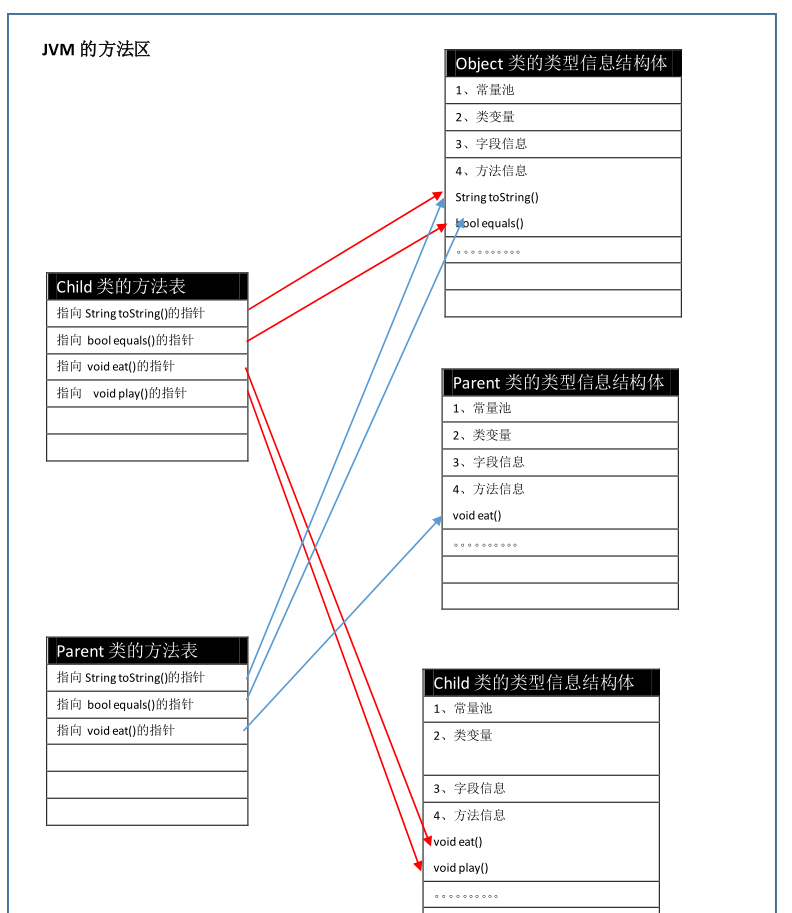
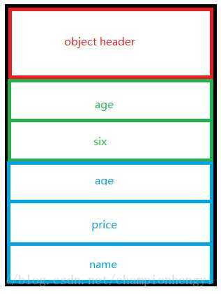
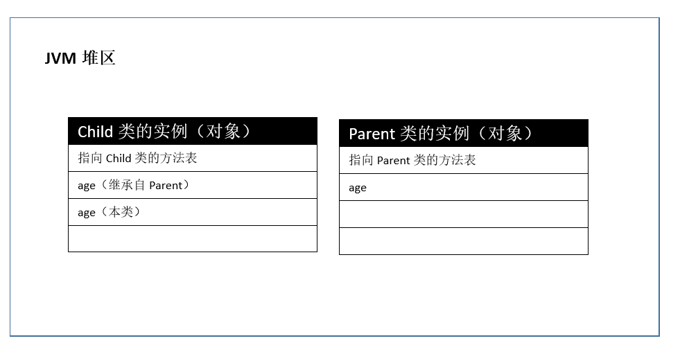
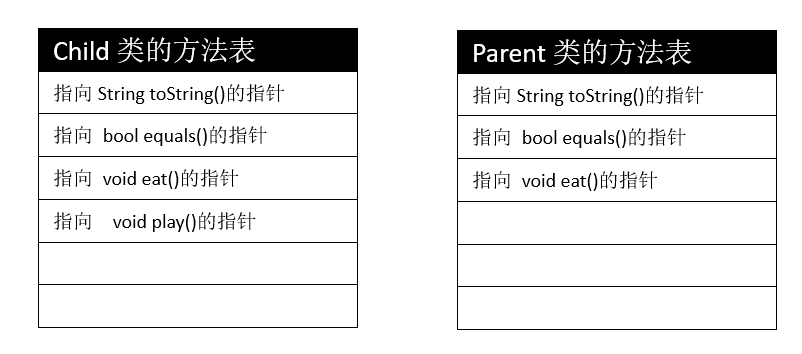

此文试图从JVM层面深刻剖析Java中的继承与多态，知识面覆盖class字节码文件，对象的内存布局，JVM的内存区域、分派，方法表等相关知识，内容整合于大量博客，知乎，书籍，并加上博主自己的理解，相信看完会对你大有裨益！
即使博主在JVM专栏已经有两篇博客对多态的实现机制进行了分析，但是今天在分析了一波继承的原理之后，发觉之前对于多态的讲述还不完整，在查阅的相关资料之后，决定在这一篇博客真正的将继承与多态讲透彻！
注：本篇博客有部分内容摘抄自：从JVM角度看Java多态。表示感谢~
先来看一份代码：
1 | class Parent { |
运行结果：
1 | 孩子在吃饭 |
并且如果我在代码中没有将c.play()进行注释的话，将会编译错误。
对于这些结果，我会在随后给大家进行说明。我将以问答的形式来组成这篇博客的架构。随着问题的深入这些疑惑都会被解决。
类之间的继承，都继承了哪些东西？
既然要谈多态，就不能绕开继承。那就从继承开始讲起。很经典也很值得思考的问题，子类从父类上都继承了哪些东西？在类的字节码文件中是怎么体现的呢？实例化后在内存中又是怎么体现的呢？
从语言层面上分析
我们先来说清楚子类到底都继承了父类的哪些东西，当然这都是语言层面上的继承，不涉及它的具体实现：
所有的东西，所有的父类的成员，包括变量（静态变量）、常量和方法（存储在方法表中），都成为了子类的成员，除了构造方法。构造方法是父类所独有的，因为它的名字就是类的名字，所以父类的构造方法在子类中不存在。除此之外，子类继承得到了父类所有的成员。
网上有些博客给出，子类没有继承父类的private成员，这种说法是错误的。我们只能说子类不能覆盖且访问父类的private变量，所以当我们试图在子类中覆盖或访问父类的private变量的时候，编译器会给我们报错，但这并不意味着子类并没有继承父类的private变量与常量（隐藏了而已）。
从字节码文件上分析
也许你会凭借上面所述的子类会继承父类的一切东西（除了构造器）而感觉在子类的字节码文件中也会包含父类的所有属性和方法。很遗憾，这种想法并不正确。先不说上面的例子，我们知道在Java中所有的类都默认继承自Object，你可以尝试使用javap命令编译一个普通类的class文件，看看其产生的字节码文件中是否含有Object中默认定义的方法信息，好比toString，equals方法等，如果你并没有重写这些方法的话。
那么在字节码文件中是如何表示两个类之间的继承关系呢？如果你对class文件熟悉的话，应该知道字节码中含有字段表集合，方法表集合与父类索引和接口索引集合。
字段表集合用于描述接口或类中声明的变量。方法表用于描述接口或类中所定义的方法。而父类索引与接口索引（implement也是一种继承）则是用来确定这个类的继承关系。父类索引用两个u2类型（表示两个字节）的索引值表示，它指向一个类型为CONSTANT_Class_info的类描述符常量，这个类型常量存储于字节码的常量池中，通过CONSTANT_Class_info类型常量中的索引值可以找到定义在CONSTANT_Utf8_info类型常量中的全限定名字符串。CONSTANT_Utf8_info在常量池中表示的就是UTF-8编码的字符串，也就是父类的名称。而接口索引的索引表之前还有一个接口计数器，也是u2类型的，之所以有计数器，我们也知道，在Java中，类都是单根继承，但是可以同时操作多个接口。索引表的内容则和父类索引相似，就不再赘述了。
因此在子类的字节码文件中，它的字段表集合中不会列出从基类或父接口中继承而来的字段。与字段表相对应，如果父类方法在子类中没有被重写，方法表集合中也不会出现来自父类的方法信息。我们在语言层面上所使用的继承，对应到字节码文件中，只不过是子类的字节码文件中含有父类的索引罢了，父类中的属性，方法都是通过这个索引找到指定的父类从而解析出来的。至于怎么找，怎么解析，则是类加载器与类加载机制部分的知识了，我在JVM专栏的相关博客中也有说明。
实例化后从内存上分析
首先问大家一个问题：创建子类对象的时候，会一同创建父类的对象吗？
我没有查阅过官方文档，但是我在网络上搜索了大量的相关资料，并且与学长也进行了讨论，我目前偏向于，我觉得的确也是这样设计的：创建子类对象的时候不会一同创建父类的对象。
在知乎上，对这个问题进行了激烈的探讨：java中，创建子类对象时，父类对象会也被一起创建么？
首先我先说支撑自己观点的原因：
引用一下知乎网友的回答：
new指令开辟空间，用于存放对象的各个属性，方法等，反编译字节码你会发现只有一个new指令，所以开辟的是一块空间，一块空间就放一个对象。然后，子类调用父类的属性，方法啥的，那并不是一个实例化的对象。并且如果一个子类继承自抽象类或着接口，那么实例化这个子类的时候还能实例化抽象类与接口不成？
而像一些博客与书籍所说的“子类对象的一部分空间存放的是父类对象”，我觉得这涉及到对象的内存布局，等下在说这个问题。
现在解答一下上面代码中的部分运行结果吧：c.eat()。我之前已经写了两篇关于多态的文章，具体的链接我不再贴出，直接在我的JVM专栏中寻找就可以。看过我前两篇博客的读者对这个代码的运行结果应该不会有太大的疑惑，也就是我们前面讲述的那些动态分派与invokevirtual指令，但是在这篇博客中，对于多态的实现性机制，我还要再阐述一个关于虚方法表的概念。
在《深入理解Java虚拟机》这本书中，关于多态的实现机制也是讲述了这三方面的内容，我之所以将三个东西分开讲，是觉得没有前面两篇博客的沉淀，这三个东西还真的是不好串起来。当初博主看这部分内容的时候是一种似懂非懂的状态，完全对这个三个东西没有明确的认识，我昨天对这三个东西做了如下总结，觉得大概可以将多态的实现机制概括清楚：
动态分派能够让我们从语言层面正确辨析重写（多态），我觉得它是Java语义上多态的实现；
invokevirtual指令则是对动态分派这个概念在JVM层面上功能的具体实现，即在JVM中是用怎样一种逻辑实现了动态分派。明白了这个指令，感觉也就体现了多态实现代码中的实现逻辑；
虚方法表则是支撑着invokevirtual指令的实现，我们知道invokevirtual指令代表了递归查找当前栈帧操作数栈顶上引用所代表的实际类型的过程，而虚方法表的实现就是让invokevirtual指令有地方可查。
而且《深入理解Java虚拟机》一书中，也称虚方法表是“虚拟机动态分派”的实现。由此可见虚方法表对于多态的重要意义。
说了这么多，到底什么是虚方法表呢？
虚方法表一般在类加载的连接阶段进行初始化，准备了类的变量初始值之后，虚拟机会把该类的虚方法表也初始化完毕。虚方法表存储在方法区，虚方法表中存放的都是类中的实例方法，不会存储静态方法，因为静态方法属于非虚方法，会在类加载的解析阶段就将符号引用解析为直接引用，因此不需要虚方法表。关于非虚方法的描述请参考这篇博客：JVM–详解虚拟机字节码执行引擎之静态链接、动态链接与分派。
虚方法表中的这些直接引用会指向JVM中相关类Class对象相应的方法信息上，当然这只是本类的方法，表中还有父类的方法，相应地指向父类类型Class对象的具体位置。
如果与上述代码对应的话，应该是这样：

如上图所示，Parent，Child都没有重写来自Object的方法，所以它们的方法表中所有从Object继承来的方法都指向了Object的数据类型。然后再各自指向本类中方法所存在的数据类型。但是这里有两点需要注意：
如果子类重写了父类的方法，如上面中的eat方法，则子类方法表中的地址将会替换为指向子类实现版本的入口地址，对应至上图就是父类中有属于自己的eat方法入口地址，子类也有属于自己的eat方法入口地址。因此invokevirtual指令才能正确的找到重写方法后的地址入口。
我们从上图中可以看出，相同的方法，在子类和父类的虚方法表中都具有一样的索引序号，这主要是为了程序实现上的方便，因为当实际类型发生变化时，仅需要变更查找的方法表，就可以从不同的虚方法表中按索引转换出所需的入口地址。
好了，如果将此篇博客中的虚方法表和前两篇博客中的动态分派与invokevirtual指令的查找过程完全弄明白的话，我觉的在理论方面你的多态已经算是完全没有问题了，如果你还想更加深入，我觉得无非就是看JVM中多态的实现源码了。
谈到这，我觉得c.eat()方法的运行结果不用我说你们也完全明白了吧。
那么接着上面所遗留的一个问题，对象的内存布局，解决掉这个东西，c.play()为什么会编译错误以及System.out.println("年龄：" + c.age)等于40的真相也将慢慢浮上水面。
以下内容引入自知乎用户：祖春雷
Java对象的内存布局是由对象所属的类确定。也可以这么说，当一个类被加载到虚拟机中时，由这个类创建的对象的布局就已经确定下来了。
Hotspot中Java对象的内存布局：
每个Java对象在内存中都由对象头和对象体组成。
对象头是存放对象的元信息，包括该对象所属类对象Class的引用以及hashcode和monitor的一些信息。关于对象头的介绍，这篇博客有些许说明JVM–详解创建对象与类加载的区别与联系。
对象体主要存放的是Java对象自身的实例域以及从父类继承过来的实例域，并且内部布局满足以下规则（从我所标出的重点来看，创建子对象的时候，确实不是真正意义上的同时创建一个基类对象）：
规则1：任何对象都是8个字节为粒度进行对齐的。
规则2：实例域按照如下优先级进行排列：长整型和双精度类型；整型和浮点型；字符和短整型；字节类型和布尔类型，最后是引用类型。这些实例域都按照各自的单位对齐。
规则3：不同类继承关系中的实例域不能混合排列。首先按照规则2处理父类中的实例域，接着才是子类的实例域。
规则4：当父类中最后一个成员和子类第一个成员的间隔如果不够4个字节的话，就必须扩展到4个字节的基本单位。
规则5：如果子类第一个实例域是一个双精度或者长整型，并且父类并没有用完8个字节，JVM会破坏规则2，按照整形（int），短整型（short），字节型（byte），引用类型（reference）的顺序，向未填满的空间填充。
还是以一个例子说明一下：
1 | class Parent { |
当前Sub对象的内存布局由下：

但是这些东西还不足以解释为什么上述代码中c.play()会报错以及为什么System.out.println("年龄：" + c.age)的答案是40。继续往下看。
我们需要注意这一句代码：Parent c = new Child()，可以发现，c的实际类型虽然是Child，但它的静态类型却是Parent，问题就出在了静态类型上！
学了这么长时间的Java，博主一直没有搞懂静态类型存在的真实意义，在网上查到的都是以面向对象的思想给你解释为什么Java中存在实际类型的同时还要存在静态类型，而没有从根本上说明静态类型到底会对变量产生什么样的影响。
博主目前查阅到的设计静态类型的真正作用有如下两点（也许还有更多）：
- Java的类型检查机制是静态类型检查
- 规定了引用能够访问内存空间的大小
对于第一点，不是本文的重点，直接给大家贴一篇相关博客深入分析Java的静态类型检查。
我们直接来讨论第二点。
我们都知道在C中有void类型的指针，而给指针前面限定一个类型就限制了指针访问内存的方式，比如char *p就表示p只能一个字节一个字节地访问内存，但是int *p中p就必须四个字节四个字节地访问内存。但是我们都知道指针是不安全的，其中一个不安全因素就是指针可能访问到没有分配的内存空间，也就是说char *p虽然限制了p指针访问内存的方式，但是没有限制能访问内存的大小，这一点要完全靠程序员自己掌握。
但是在Java中的静态类型不但指定了以何种方式访问内存，也规定了能够访问内存空间的大小。
对应于刚开始贴出得代码：
我们看Parent实例对象的大小是占两行，但Child实例对象占三行（这里就是简单量化一下）。
如下图：

所以虽然引用c指向的是Child实例对象，但是前面有Parent修饰它，它也只能访问两行的数据，也就是说c根本访问不到Child类中的age！！！只能访问到Parent类的age，所以输出40。你也可以对照着我上面贴出的“Sub对象的内存布局”那张图来对刚开始贴出的代码进行分析。
而且我们注意两个类的方法表：

我们看到Parent的方法表占三行，Child的方法表占4行，c虽然指向了Child类的实例对象，而对象中也有指针指向Child类的方法表，但是由于c受到了Parent的修饰，通过c也只能访问到Child方法表中前3行的内容！！！！因此c.play()编译会出错。就是这个原因，它在方法表中根本找不到play方法。
前面说过，在方法表的形成过程中，子类重写的方法会覆盖掉表中原来的数据，也就是Child类的方法表的第三行是指向Child.eat的引用，而不是指向Parent.eat（因为方法表产生了覆盖），所以c访问到的是Child.eat。也就是子类的方法（这也是作为多态的一种解释，比invokevirtual指令更加深入）！！！这种情况下，c是没有办法直接访问到父类的eat方法的。
好了，本篇博客的内容已结束，对开头的代码也做出了完整的解释。但是我们还是有一些地方没有涵盖，比如super关键字。对于super关键字的使用，我觉得如果你已经将我写的三篇有关于多态的博客吸收与消化，那么，对于super关键字的使用与基本理解，应该是没有问题的，至于对它的深入研究，我们以后再说~~~
参考阅读
《深入理解Java虚拟机》—周志明